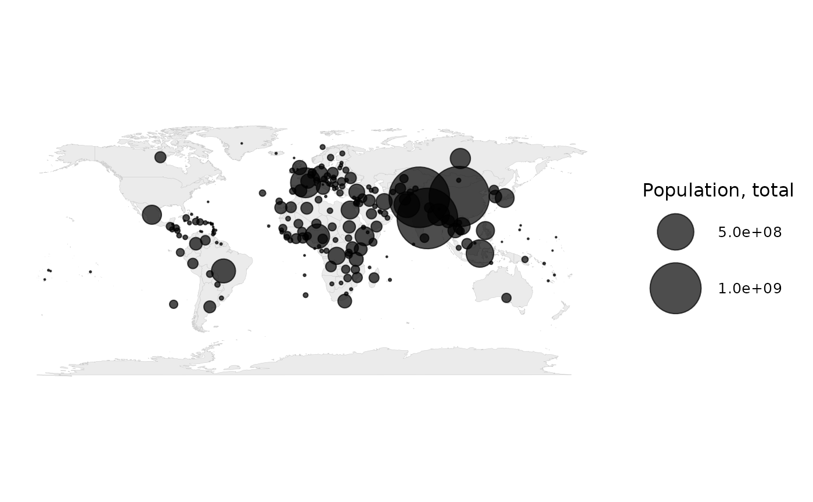

Plots sized circles at country centroids – the right idiom for totals (population, total emissions, total GDP), which a choropleth misrepresents because big values hide in small countries and vice versa.
Usage
bubble_map(
data,
size,
color = NULL,
projection = "equal_earth",
backend = c("polygon", "sf"),
max_size = 18,
alpha = 0.7
)Arguments
- data
A country-level frame with
iso3cand thesizecolumn.- size
The column controlling bubble size (unquoted).
- color
Optional column controlling bubble colour (unquoted).
- projection
Projection for the base map (sf path).
- backend
"polygon"(default) or"sf"for the base map.- max_size
Largest bubble size.
- alpha
Bubble transparency.
Examples
# \donttest{
snap <- worlddatajoin::world_snapshot$countries
if (requireNamespace("maps", quietly = TRUE)) {
bubble_map(snap, population)
}
#> Warning: Removed 5 rows containing missing values or values outside the scale range
#> (`geom_point()`).

# }